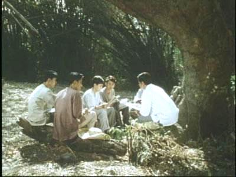
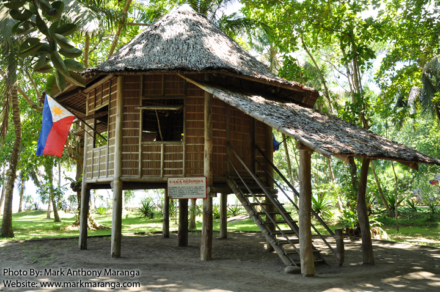
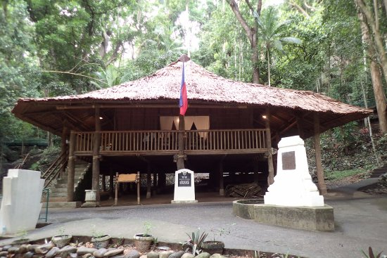
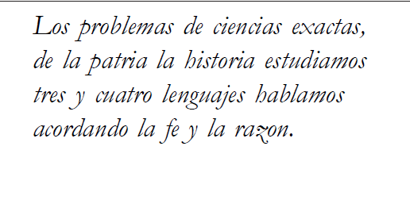

Rizal,
the Educator

Rizal teaching under kioskA dream
before
exile.
In a letter to Blumentritt dated March 31, 1890, Rizal already confided his wish to build a secular, independent school in the Philippines. After winning lottery money in September 1892, he bought 16 hectares in Talisay and built three houses: a square one where he lived with his mother, sister Trinidad, and a nephew; an octagonal one for his students; and a hexagonal one for his chickens.

Casa Redonda octagonal
Rizal Shrine in DapitanWritten
to be
sung.
Composed in 1895 and dedicated to his pupils—poetry as sound, meant to be carried in children's voices. Rizal understood education was not merely cerebral; it passed through emotion, music, and the body. The school was alive.

Screenshot of a Part of the HymnPerhaps the first progressive school in Asia.
Rizal integrated education directly into community and working life, treating school not as separate from "real life" but as part of it. This pioneered what Philippine educator Maria Luisa Doronila would later formalize as "school-based management" and "community-based education."
Rizal adapted lessons to each nephew's aptitude, noting one preferred farming over books ("It is necessary that there be some to cultivate the land"), while another had a more scholarly bent.
When Rizal left for Manila, he gifted 6 of his 16 hectares in Talisay to his pupil and valet, Jose Acopiado. His star pupil, Jose Aseniero, went on to become governor of Zamboanga province (1925–1928).